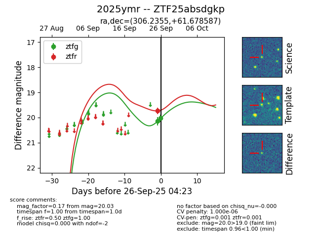
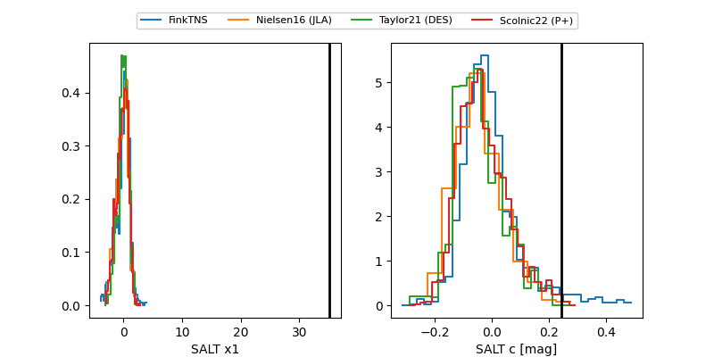

FINK: ZTF25absdgkp
Lasair: ZTF25absdgkp
ALeRCE: ZTF25absdgkp
TNS: 2025ymr
YSE: 2025ymr
ZTF25absdgkp (ztf,fink)
2025ymr (tns,yse)
equatorial (ra, dec) = (306.2355,+61.67859)
galactic (l, b) = (96.3229,+13.52554)


last ztfg=20.03, ztfr=19.74
2 ztfg, 1 ztfr detections